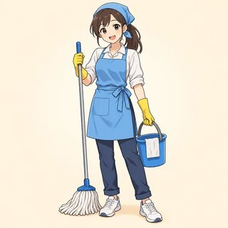
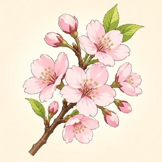
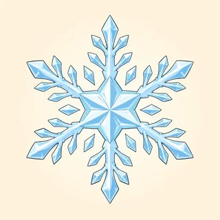

Module 6
Habits, Free Time & Plans
How often? Do you like it? When are you free?
Talk about your real life
- 6.1 How often? I always drink coffee.
- 6.2 Likes & dislikes: I love cooking.
- 6.3 Times, dates & plans: Are you free on Saturday?
How Often? — Adverbs of Frequency
always · usually · often · sometimes · hardly ever · never




From 100% to 0%
- I always have breakfast. · I hardly ever eat fast food.
- never = no. "I never smoke." Not "I don't never smoke."
Be after, verb before
| Normal verb → before | be (am / is / are) → after |
|---|---|
| I always drink coffee. | She is always late. |
| They usually work late. | We are often busy. |
| ✗ I drink always coffee. | ✗ She always is late. |
How often do you cook?
- How often do you cook?
- How often does she work at night?
- once a week (1)
- twice a day (2)
- three times a month
- every morning · on Fridays
Answers
Ex 1: I always get up… · She is never late. · We sometimes eat… · They are usually tired. · He hardly ever drinks… · My bus is often on time.
Ex 2: always · never · hardly ever · once · twice · usually
Ex 3: I often cook at home. · She is usually busy. · How often do you swim? · A nurse usually works at night. · I go to the gym twice a week.
Class survey + bar chart
- Read your question: How often do you…?
- Ask 6–8 people. Make a mark | for each answer.
- Color the bars. One square = one person.
- Report: "Five people always cook. Two people never cook."
Likes & Dislikes — love / like / hate + -ing
What do you do in your free time?


I love cooking
| Spelling | Example |
|---|---|
| + ing | cook → cooking |
| drop e | dance → dancing |
| double | swim → swimming |
Nina: What do you do in your free time, Omar?
Omar: I love cooking. Do you like cooking?
Nina: No, I don't. I hate it! But I don't mind washing the dishes.
Omar: Do you like swimming?
Nina: Not really. The water is too cold for me.
Answers
Ex 1: playing · writing · shopping · painting · making · running · dancing · listening
Ex 2: it · them · him · her · us · me
Ex 3: I love dancing. · She hates waiting. · We don't mind cleaning. · He doesn't like swimming. · They enjoy reading.
Find someone who…
- Stand up. Ask: "Do you like dancing?"
- "Yes, I do. I love it!" → write the name.
- Then ask: "How often do you dance?"
- One person = 2 boxes maximum.
Times & Dates — Making Plans
Are you free on Saturday?




| We write | 1st | 2nd | 3rd | 4th | 5th | 21st |
|---|---|---|---|---|---|---|
| We say | first | second | third | fourth | fifth | twenty-first |
Big → in · one day → on · a point → at
| at | 7 o'clock · noon · at night |
|---|---|
| in | July · winter · 2026 · in the morning / afternoon / evening |
| on | Monday · June 1st · my birthday · on the weekend (US) |
Maya: Hi Leo! Are you free on Saturday?
Leo: Yes, I think so. Why?
Maya: Would you like to have lunch? Let's meet at one o'clock.
Leo: Sure, that sounds great! I'm meeting my brother in the morning, but I'm free in the afternoon.
Maya: Great. I'm going to walk there. See you then!
Answers
Ex 1: at · in · on · in · on · at · in · on (UK: at the weekend)
Ex 2: am · are · to · are · going
Ex 3: first · second · third · fourth · twenty-fifth · thirty-first
Find a time to meet
- A and B: don't show your diary!
- Ask: "Are you free on Monday morning?"
- "Sorry, I'm busy. I'm working." → mark ✗
- Find 3 free times. Plan 3 things: "Let's go to the park on Saturday afternoon!"
Module 6 done
- I usually cook dinner. I go swimming twice a week.
- I love hiking. Do you like it?
- Are you free on Saturday? Let's meet at one. I'm going to bring a cake!
Homework: the online lessons 6.1–6.3. Next: Module 7, Out in the World.